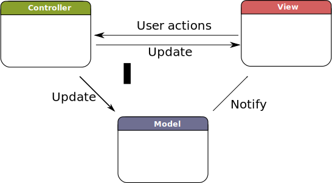
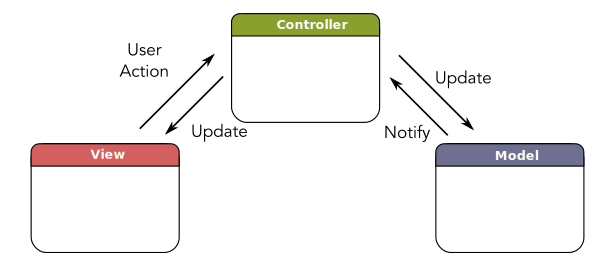
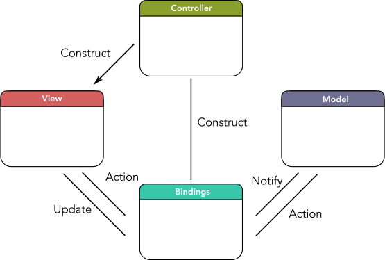

Looking at Model-View-Controller in Cocoa
According to Apple’s documentation, the standard pattern for Cocoa applications is called Model-View-Controller. Despite the name, this pattern is quite unlike the original definition of Model-View-Controller applied to Smalltalk-76. Cocoa’s application design pattern actually shares more in common with ideas developed at Taligent (an Apple co-developed project from the 1990s) than with the original Smalltalk origin of the term.
In this article, I’ll look at a little theory and history behind the primary application design pattern used in Cocoa. I’ll discuss the key shortcoming of Cocoa’s Model-View-Controller approach, Apple’s aborted efforts to address this shortcoming and wonder from where the next major improvements will come.
Smalltalk-76
Probably the widest quoted pattern in UI development is Model View Controller (MVC) - it’s also the most misquoted. I’ve lost count of the times I’ve seen something described as MVC which turned out to be nothing like it. - Martin Fowler, GUI Architectures
I want to quickly address what Martin Fowler means in the above quote since, by the definition Fowler uses – the same definition originally used by Trygve Reenskaug to describe Smalltalk-76 – the approach commonly used to develop Cocoa apps is not Model-View-Controller.
In Smalltalk-76, interactive views were split into two completely separate objects: the View object and the Controller object. The View object performed display but any click or interaction wasn’t handled by the View object and was instead dispatched by the partner Controller object. The important point to understand is that the Controller didn’t load, setup or manage the View, nor did one Controller handle actions for multiple Views; in the original definition of Model-View-Controller, the View and Controller were simply the action and display aspects of a single control on screen.

The diagram of Smalltalk-76’s Model-View-Controller shows the model as the central component of the object graph, with communication primarily occurring between the model and the view or controller directly.
This precise pattern reflects how Smalltalk-76 processed user-input and there’s little need to use this precise pattern in modern programs. In that sense, either no modern framework is really Model-View-Controller, or the definition of the term has changed to mean something else.
Cocoa (AppKit/UIKit)
When Cocoa says Model-View-Controller it’s mostly trying to evoke the notion of Separated Presentation and Content in application design (the idea that the model and view should have a decoupled design and be loosely linked at construction). To be fair, it’s not just Cocoa that uses Model-View-Controller in this way: most modern uses of the term are really intended to convey what Martin Fowler calls “Separated Presentation” rather than the original Smalltalk-76 definition.
Looking at the precise pattern Cocoa actually uses, Apple’s Cocoa reference guides use a definition of Model-View-Controller that looks like this:

The important point to note is that the controller is the center of the object graph with most communication passing via the controller – distinct from the Smalltalk-76 version where the model was the center of the graph.
Cocoa doesn’t force this pattern on apps but it is strongly implied by all application templates. Loading from NIB files strongly encourages the use of NSWindowController/UIViewController. The delegate requirements of NSTableView/UITableView and related classes strongly imply a coordinator class that understands responsibilities of the entire presentation. Classes like UITabBarController and UINavigationController explicitly require instances of UIViewController to coordinate views as they are swapped in and out.
Taligent
In academic discussions, the pattern that Cocoa calls Model-View-Controller is usually called Model-View-Presenter. The two are identical except that what Cocoa calls Controllers are instead called Presenters. The name “Presenter” reflects their role setting up the scene and coordinating the action. In some cases, the Presenter object may be called a “Supervising Controller” – you can understand why “Model-View-Supervising Controller” might get simplified back down to Model-View-Controller again.
The term Model-View-Presenter originated in the Taligent project. The most commonly cited paper is “MVP: Model-View-Presenter, The Taligent Programming Model for C++ and Java” from 1997 but Taligent’s classes for implementing this model were documented at least as early as 1995.
Taligent was a company originally started within Apple as a project code-named “Pink” (after the color of index cards used for its ideas) to provide an operating system replacement for System 7 (which was mapped out on “Blue” index cards). The project had a series of famous development and management problems during which Apple withdrew and focussed on the equally doomed Copland project. Taligent was continued at IBM where it was released as a series of application frameworks named CommonPoint, rather than an operating system, before being shut down in 1998.
While NeXTStep predates Taligent, the controller classes in AppKit – which are now defining aspect of AppKit’s Model-View-Controller design pattern – did not appear until NeXTStep 4 in 1996 (a major redesign of NeXTStep and the first NeXTStep version to incorporate the NS prefix that remains in macOS until this day). Earlier versions of NeXTStep used what might generously be called the Document-View pattern or more cruelly, no pattern at all.
I don’t know that NeXTStep borrowed directly from Taligent – it’s possible this is simply a case of convergent evolution or multiple companies hiring from the same talent pool. All I can really tell from my 2017 vantage point is that Taligent published first.
Be careful with names: In modern iOS programming, Model-View-Presenter refers specifically to separate pattern where presentation logic is pulled into a separate presenter class and separated from the controller by a protocol layer. Calling Cocoa Model-View-Controller by the name Model-View-Presenter might feel historically justified but isn’t accurate by the modern use of these terms.
The Controller Problem
Understanding Cocoa’s Model-View-Controller as a variation on the Model-View-Presenter pattern – where the Presenter or Supervising Controller is responsible for the lifecycle, action and change propagations of all of the views under it in the scene – is important since it leads to the largest problem in the pattern: the “Controller Problem”.
The Controller Problem, also called “Massive/Huge/Giant View Controllers”, is the problem where controllers in Cocoa have a horrible tendency to grow large by taking on a number of separate responsibilities that are primarily related by co-location in the view – not necessarily by any functional or data dependencies. Most non-trivial projects have a handful of controllers in the 2000 lines range or larger.
Let me be clear: it’s not the size alone that’s the problem here but the way that controllers grow this big that’s concerning: controllers in Cocoa are an aggregation of responsibilities that may or may not be related. A view controller may be responsible for a half-dozen or more views and each one may have construction, configuration, data display, data updating, layout, animation and action and other state maintenance responsibilities that end up in the parent view controller.
That mix of independent and interdependent responsibilities at substantial scale is a maintenance nightmare. The large quantity of code blobs makes actual dependencies and interrelated functionality difficult to find. Controllers are always difficult to test (due to significant app and bundle state dependencies making isolation difficult) but the problems of scale and semi-dependence compound to make everything worse.
The only solution to the Controller Problem is to continuously refactor large view controllers into multiple smaller, simpler controllers. This may involve redesigning or rethinking data structures to disentangle and eliminate dependencies that pass through the view controller and design sensible approaches to have multiple view controllers communicate. It can be done but it can involve lots of work, has all the normal risks of introducing bugs with each change, remains difficult to test (as with everything view controller related), yet despite all this, offers zero functionality gain for the end user.
Bindings
Apple have known about the Controller Problem for some time, as evidenced by their Mac OS X 10.3 introduction of Cocoa Bindings.
A binding is a runtime constructed path between two components. These components are usually a source of data and an observer of that data. The binding allows these components to communicate changes without needing any explicit code path. Instead, the path between the two components is defined in data – for Cocoa bindings, this is called a “key-path”. By specifying a key-path through the controller all the way to the model properties that govern the views’ state, bindings can ameliorate the Controller Problem by dramatically reducing – or even eliminating – code paths through the controller.

More than a decade after their introduction, Cocoa Bindings remain all-but-forgotten. You can still use bindings in AppKit (they were never deprecated) but they were never introduced to UIKit, reflecting an impression that they never quite succeeded in their aim of making view programming easier.
I think Bindings attacked a problem that needed attacking and in some cases could work really well – especially when combined with NSArrayController to drive an NSTableView – but I can understand why they didn’t take over Mac programming.
The key advantage of Cocoa Bindings (less code in your view controller) was achieved by a large amount of configuration in Interface Builder inspector panels. This can be confusing if you’re looking for functionality in your code (it’s not in your code), can be difficult to search (although Xcode’s project-wide searching eventually gained the ability to search XIB files), difficult to debug (model data changes without the stack trace passing through your code), is very difficult to teach to newcomers who are unlikely to want to search through the inspector panels, can be even more cryptic than staring at code (you can’t add comments or restructure a XIB file) and can fall victim to annoying Interface Builder issues like localization mixups and version control merge issues.
In my opinion, the critical failing for Cocoa Bindings remains the difficulty in adding custom transformations and custom properties. These could both be done but the work involved in registering transformers and exposing bindings dictionaries made a tiresome affair. It always just seemed easier to pass the data through the view controller without bindings. This meant that Bindings tended to help the simplest problems (that didn’t need much help) but didn’t have much impact on the harder problems.
Something new?
Since Cocoa Bindings in Mac OS X 10.3, there haven’t really been any clear attempts by Apple to alter the design pattern used for Cocoa apps.
We did get Storyboards in iOS 5 and Mac OS X 10.10 but storyboards aren’t really an attempt to change the design pattern as much as they are an attempt to facilitate the existing design pattern. Storyboards re-inforce the Model-View-Presenter design pattern by encouraging use of NS/UIViewController. Storyboards do help by encouraging smaller more focussed view controllers and very slightly reducing the “Presentation” burden of setup and transition. However, since they are configured in Interface Builder, they do exhibit a number of the issues that affected Cocoa Bindings.
For those of us hoping for something more ambitious in application design patterns, Storyboards don’t offer much that’s new.
New ideas in application design do exist. Outside Apple, we have options like Reactive Programming (which can fulfill most the role of Bindings if we choose), Model-View-ViewModel (which reduces the work for a controller by bringing a transformed section of the model closer to the view), unidirectional dataflow (which reduces the need for binding by forcing data changes through a single reducer and broadcasting all data changes to the whole app); all of which are popular within different circles.
There are also frameworks for doing things radically differently, like React Native or Swift-Elm, although sacrificing Swift or Cocoa entirely comes with a significant set of drawbacks.
It’s unclear if any of these will have an effect on official Cocoa app development. Swift proved that Apple are willing to dramatically shake things up occasionally and there’s an argument that Swift has increased the desire for a design pattern or view framework that takes advantage of aspects of the Swift language. However, it will likely be some time before Apple are willing to introduce a major Swift-only framework.
Conclusion
Cocoa Model-View-Controller derived from a pattern called Model-View-Presenter. To add extra confusion, Model-View-Presenter means something else in modern programming so every name is likely to confuse time-travellers. I will try to use the description “Cocoa Model-View-Controller” since it has an authoritative definition.
If we take NeXTStep 4 as the origin date for Cocoa’s current Model-View-Controller pattern then it is 20 years old this year. It’s not broken but it has its drawbacks and it doesn’t feel as exciting or efficient as it once did.
Apple made its only significant effort to improve the design pattern, Cocoa Bindings, relatively early. Its reception was mixed and it has not been carried forward onto Apple’s newer platforms.
I don’t have any information about internal efforts by the AppKit or UIKit teams but it’s not immediately apparent that Apple are looking to make any dramatic changes any time soon. There are a number of possible design patterns employed in third-party frameworks which aim to improve the overall application design pattern in Cocoa but there doesn’t appear to be consensus that any one of these is necessarily the way forward. I do think these efforts reflect an interest in some kind of improvement.
The weirdest subclass I've ever written
Statements, messages and reducers